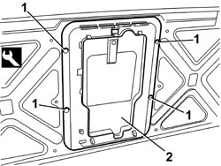

7050A78 SKI FLAP IN REAR SEAT BACKREST - R.R.
- Path
- Procedures > 70 FITTINGS > 7050 REAR SEATS > 7050A REAR SEAT ASSEMBLY > 7050A78 SKI FLAP IN REAR SEAT BACKREST - R.R.
- Kind
- repair procedure (removal / refitting; the operation number is the code)
- Applies to
- all engines; all production periods
- Interactive page
- https://sloeber94.github.io/elrnDB/#/939011328
Applies to: all engines; all production periods; only with equipment: One-piece rear seat
 Removing
Removing
 Refitting
RefittingOp. 7040B20 BACK TRIM FOR LUGGAGE COMPARTMENT/LOAD PLATFORM - ARRANGE
1. Release the retaining buttons using the special tool.
Tool | Description | Function | Validity |
|---|---|---|---|
1823015000 | Knife | Retainer removal |
2. Remove the ski flap.

Applies to: all engines; all production periods; only with equipment: One-piece rear seat
Refitting
Removing- Check that the ski flap is not damaged.
- Place the ski flap in position.
- Attach the retaining buttons.
Op. 7040B20 BACK TRIM FOR LUGGAGE COMPARTMENT/LOAD PLATFORM - ARRANGE
Applies to: all engines; all production periods; only with equipment: Split rear seat
Removing
Refitting1. Operate the lever (1a) to release the left backrest (1b), then fold forward to the end of its travel.

Applies to: all engines; all production periods; only with equipment: Split rear seat
1. Remove the rear frame (1a) releasing the inner retainers (1b).

Applies to: all engines; all production periods; only with equipment: Split rear seat
- Lift up the backrest to the end of its travel and and attach it to the striker.
1. Lower the armrest until it is in the end of travel position.
2. Rotate the release knob (2a) and lower the ski flap (2b).
3. Release the inner retainers (3a) and move the front frame (3b) slightly forwards.
4. Remove the frame and ski flap (4a) lifting it up to release the lower retainers (4b).

Applies to: all engines; all production periods; only with equipment: Split rear seat
Refitting
Removing- Check that the ski flap and frame are not damaged.
- Place the ski flap and frame in position and attach the lower retainers and then the other perimeter retainers.
- Lift up the ski flap and secure it using the knob.
- Raise the armrest.
- Operate the lever to release the backrest, then fold it forward to the end of its travel.
- Position the rear frame and attach the inner retainers.
- Lift up the backrest to the end of its travel and and attach it to the striker.
Topics linked from this page (1)
Topics that link to this page (5)
- 7050A43 SPLIT REAR SEAT ABCKREST ATTACHMENT/LOCKING DEVICE - R.R.
- 7050A53 SPLIT REAR SEAT BACKREST FRAME (ONE), LEFT OR RIGHT - R.R. WITH BACKREST REMOVED
- 7050D34 TRIM FOR LEFT REAR SEAT BACKREST (TWO SEATER) - R.R.
- 7050D35 LEFT REAR SEAT BACKREST COVER (TWO SEATER) - R.R. WITH BACKREST REMOVED
- 7065B18 CENTRE REAR SEAT BELT - R.R.